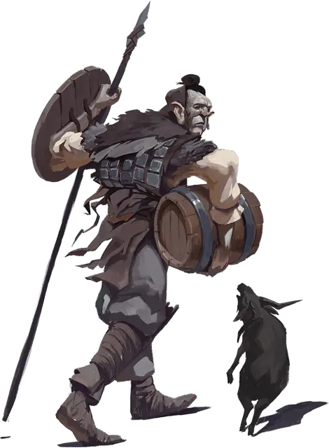

Вербиг мародёр
Verbeeg Marauder
Большой Великан, нейтральный

Класс Доспеха 14 (шкурный доспех, щит)
Хиты 85 (10к10 + 30)
Скорость 40 футов
| мод | спас | ||
|---|---|---|---|
| СИЛ | 19 | +4 | +4 |
| ЛОВ | 11 | +0 | +2 |
| ТЕЛ | 16 | +3 | +5 |
| мод | спас | ||
|---|---|---|---|
| ИНТ | 11 | +0 | +0 |
| МДР | 10 | +0 | +0 |
| ХАР | 9 | −1 | −1 |
Навыки Атлетика +6, Скрытность +2, Уход за животными +2
Чувства пассивное Восприятие 10
Языки Общий, Великаний
Опасность 4 (1100 опыта)
Бонус мастерства +2
Особенности
Мастер простого оружия. Простое оружие в руках вербига наносит одну дополнительную кость урона при попадании (уже включено в атаку).
Действия
Мультиатака. Вербиг совершает две рукопашные атаки.
Копьё. Рукопашная или дальнобойная атака оружием: +6 к попаданию, досягаемость 5 фт., или дистанция 20/60 фт., одна цель. Попадание: 14 (3к6 + 4) колющего урона или 17 (3к8 + 4) колющего урона при совершении дальнобойной атаки или рукопашной атаки двумя руками.
Описание
Вербиги — это великаны, выглядящие как огромные люди с длинными конечностями и вытянутыми лицами. У некоторых из них есть и другие особенности, придающие им ещё более устрашающий вид.
Вербиги изготавливают свои собственные доспехи и оружие. Они предпочитают метательные копья всему остальному оружию, и у них обычно есть по несколько копий с собой.
МародЁры
Вербиги-мародёры ведут себя как разбойники, грабя гуманоидов, с которыми они сталкиваются в диких пустошах. Если им не хватает еды, то они также убивают и съедают тех, кому не повезло угодить в их руки. Вербиги-мародёры предпочитают жить в заброшенных местах, часто деля территорию с холмовыми великанами и ограми. Нет ничего необычного во встрече с бандой холмовых великанов и огров под руководством вербига, так как вербиги намного умнее своих жестоких собратьев. Вербиги также любят общество млекопитающих и позволяют медведям, волкам, воргам и другим хищникам устраивать своё логово рядом с вербигами. Они отлавливают и содержат лошадей, мулов, овец, коз и крупный рогатый скот для пропитания и торговли.